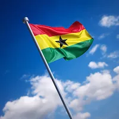

Benson Omari Ameyaw | WDD 130
Hey there, my name is Benson Omari Ameyaw. I am 21 years old. I am from Ghana, and I love programming so much. Being a programmer has always been my dream job.
Ghana

Ghana is a country located on the coasts of West Africa. It was formerly referred to as Gold Coast during colonial time and many years before that, due to how rich the country is, in gold. She gained independence on the sixth of March, nineteen sixty-seven(6th March, 1967). The capital city is Accra, which is home to the presidential house, now known as Jubilee House. Accra is a very beautiful place to be and everyone who visits here from any other African country, never wants to go back to their country.